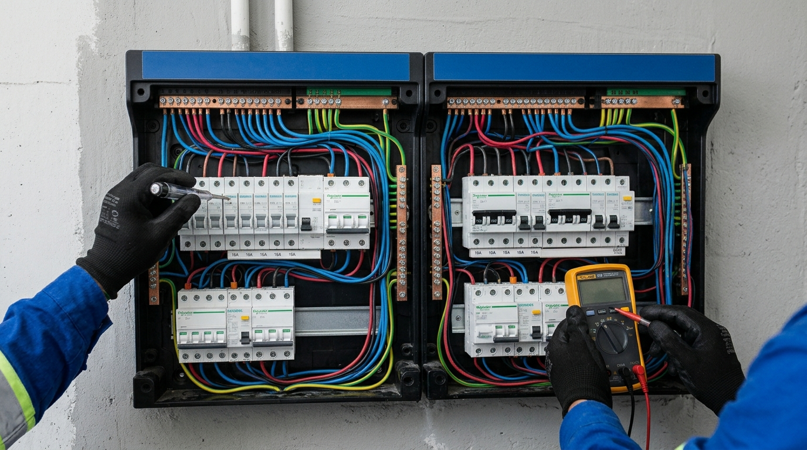

Eletricista, Câmeras e Segurança Eletrônica, Automação e Fechaduras Digitais
Em São José dos Campos, Litoral Norte (Riviera de São Lourenço) e Vale do Paraíba. Serviços técnicos especializados para residências, comércios e condomínios. Atendimento direto com o responsável técnico.
Nossas Especialidades
Procurando eletricista em SJC ou no Litoral Norte? Oferecemos instalações elétricas, câmeras de segurança, fechaduras digitais e automação residencial com atendimento direto.

Instalações Elétricas — Eletricista SJC
Projetos, manutenção e emergência elétrica 24h para residências e comércios em São José dos Campos.
- Quadros elétricos, disjuntores e aterramento
- Iluminação LED, tomadas e interruptores
- Manutenção preventiva e corretiva
- Atendimento emergencial elétrico 24h

Segurança Eletrônica & CFTV
Instalação de câmeras IP e CFTV, alarmes e monitoramento remoto pelo celular com DVR/NVR.
- Câmeras IP e CFTV com DVR/NVR
- Alarmes e sensores de presença
- Monitoramento remoto pelo celular
- Vídeo porteiros e interfones

Fechaduras Digitais
Fechaduras digitais biométricas, por senha, cartão ou aplicativo para residências, empresas e Airbnb.
- Fechadura digital biométrica, senha e cartão
- Acesso por aplicativo e senhas temporárias
- Travamento automático
- Instalação em diferentes tipos de portas

Automação Residencial e Comercial
Interruptores inteligentes, cenários de iluminação e integração com Alexa, Google Home e Apple Casa.
- Iluminação e interruptores inteligentes
- Integração com Alexa, Google Home e Apple Casa
- Portões, cortinas e ar-condicionado automatizados
- Controle remoto pelo celular

Infraestrutura e Suporte TI
Cabeamento estruturado, redes corporativas, Wi-Fi Mesh e instalação de Starlink para residências e empresas.
- Cabeamento estruturado e redes Wi-Fi
- Instalação de sistemas Starlink
- Configuração de roteadores e repetidores
- Manutenção e montagem de computadores
Onde Atendemos
Eletricista, câmeras CFTV, fechaduras digitais e automação em São José dos Campos, Vale do Paraíba e Litoral Norte de SP.
Perguntas Frequentes
Dúvidas comuns sobre nossos serviços de eletricista, segurança eletrônica e automação em São José dos Campos, Litoral Norte (Riviera de São Lourenço) e Vale do Paraíba.